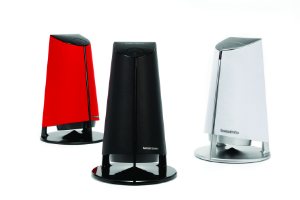
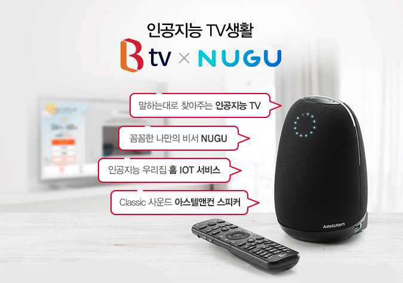
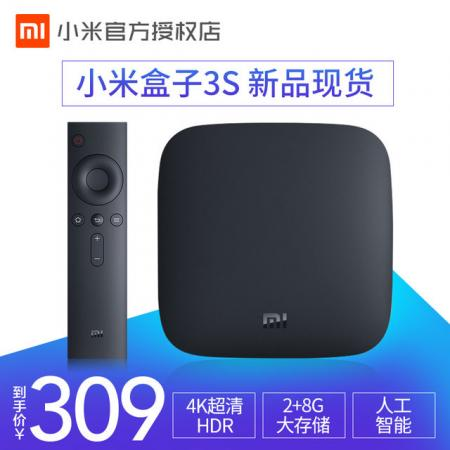
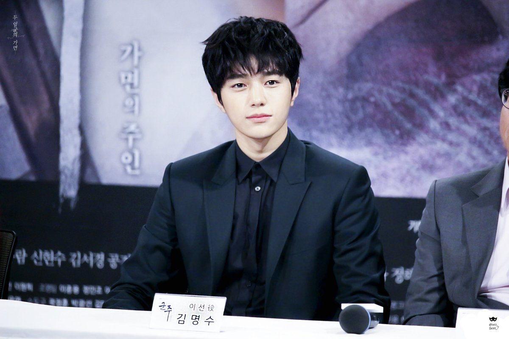

셋톱박스 기능을 탑재한 인공지능 스피커
  
저는 현재 ‘기가 지니’를 사용하고 있습니다. 기가 지니란 주로 휴대폰 혹은 스피커로만
연동이 됐던 기존의 인공지능(AI)와 다르게 TV와 연동되는 시청각 기반의 인공지능 비서입니다.
세상에서 모든 사람들의 톤, 목소리, 음역대가 다른데 심지어 사투리까지 알아듣습니다. 리모콘이 멀리 있을 경우에는 채널번호를 말하면 정확하게 채널을 바꿔주고
특정 방송사 채널 번호가 기억나지 않을 때는 채널 이름만 호명해도 채널을 교체해줍니다.
그리고 리모콘의 위치를 모를 경우에는 소리로 알려줍니다. 저의 목소리에 반응하는 인공지능 스피커를 보면서 신기하고 대단한 기술인 것 같다고 느꼈습니다.
또한, 사랑한다고 말하면 저도 사랑해요 라고 답을 해주며 말동무 역할도 해줍니다.
실제로 제 친구의 할머니께서 혼자 살고계셔서 인공지능 프랫폼"네이버 클로바"를 설치해 드렸다고 합니다.
할머니께서 대화를 나누시면 친구의 휴대폰으로 대화 내용이 전달되는 시스템입니다.
대화 내용 중 일부는 "할머니 머리하고 올게 집 잘 보고 있어"ㅡ>"네 걱정말고 조심히 다녀오세요.",
"짱구야(설정한 클로바의 이름) 자장가 불러줘"ㅡ> "섬집아기 재생", "할머니가 짱구 사랑해"ㅡ>"저도 언제나 당신을 아끼고 있죠." 등이 있습니다. 이때 느낀 것은 인공지능 플랫폼이 오직 명령에 의해 행동하는 역할만 수행한다고 생각했었는데
이렇게 진짜 사람의 친구처럼 말동무가 될 수 있다는 사실에 놀랐고 인상깊었습니다.
소
윤
이
의
시
간
표
시간
월
화
수
목
금
9시
~
12시
공강
공강
공강
기초 플밍
과학 기술사
1시
~
3시
pc 실습
자료구조
공강
4시
~
6시
스터디
논리회로
공강
공강
7시
~
8시
멋쟁이
사자처럼
공강
멋쟁이
사자처럼
볼링 동아리
함께하는 양자택일
여러분과 저의 취향은 얼마나 잘 맞을까요??

← 사진 눌러서 소윤이의 취향보기
휘핑크림
YES
NO
민트초코
아~~~~~극혐~~~~
아~~~~~진짜 진짜 극혐~~~
알람 울리기 30분 전에 잠에서 깨기
30분 더 잘 수 있어서 좋다
애매한 시간이라 싫다
김밥의 필수템
단무지!
햄!
직접 정한 성신여대 학식 TOP3
뚝불
육회 비빔밥
돈육 순두부찌개